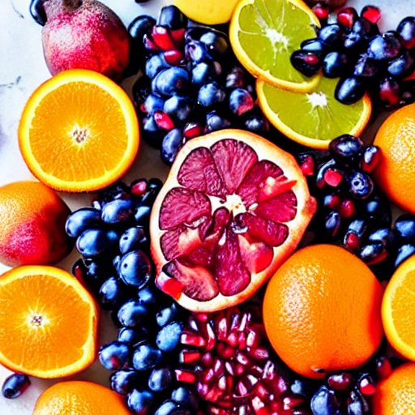

Freya's Fruit Platter

Description
A vibrant assortment of seasonal fruits such as oranges,
berries, grapes, and pomegranate seeds, served with a side
of ambrosia—a divine fruit salad drizzled with a touch of
ambrosial nectar.
Ingredients
- Oranges
- Berries (strawberries, blueberries, raspberries, etc.)
- Grapes (red, green, or a mix)
- Pomegranate seeds
- Ambrosia:
- Assorted tropical fruits (such as pineapple, mango, kiwi, and papaya), diced or sliced
- Coconut flakes
- Honey or agave nectar
- Fresh mint leaves (optional, for garnish)
Instructions
- Prepare the fruit platter:
- Peel the oranges and separate them into segments. Remove any seeds or pith.
- Rinse the berries and pat them dry gently.
- Wash the grapes and remove them from the stems.
- Carefully cut open a pomegranate and collect the seeds (also known as arils).
You can tap the back of the pomegranate with a spoon to release the seeds.
- Arrange all the fruits on a large platter or individual serving plates.
Be creative with your arrangement to make it visually appealing.
- Make the ambrosia:
- In a separate bowl, combine the diced or sliced tropical fruits of your choice.
- Sprinkle a handful of coconut flakes over the fruits.
- Drizzle honey or agave nectar over the fruit mixture to add sweetness.
- Gently toss the fruits with the coconut flakes and sweetener until well combined.
- Serve and garnish:
- Place the bowl of ambrosia alongside the fruit platter or distribute it evenly among the individual serving plates.
- If desired, garnish the ambrosia with fresh mint leaves for an extra touch of freshness and beauty.
Back to home page